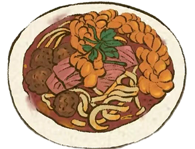
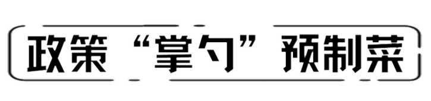
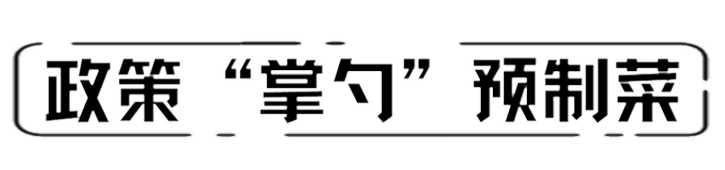

民以食为天，食以安为先。为了让百姓吃的更加放心，企业和政府都在不断做出努力。从企业角度来说，预制菜企业严格执行食品安全标准，逐步建立健全的质检体系，确保产品的安全、卫生、营养和口感。其次，随着科技的进步，预制菜生产技术也在不断创新。企业正不断研发新的加工技术和设备，提高预制菜的生产效率和质量。
今年，市场监管总局等六部门21日联合发布《关于加强预制菜食品安全监管 促进产业高质量发展的通知》，首次明确预制菜定义和范围，强化预制菜食品安全监管，明确了推动预制菜食品安全标准和质量标准体系建设的方向。如今，小小的预制菜串联起田间地头和居民餐桌，既关联着经济增长，也关联着人民群众对美好生活的向往，我们相信，在未来，预制菜会成为主流，预制菜的向好发展正给大家带来着无限希望。
 
